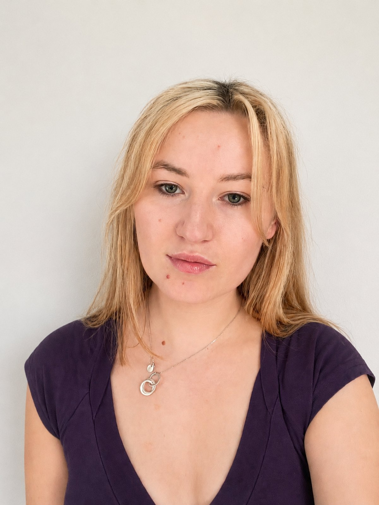

My work combines software engineering, machine learning and security principles to build systems that are both intelligent and resilient. I am particularly interested in application security, cloud security and protecting sensitive data within critical sectors such as healthcare. I am a recent graduate dedicated to developing robust, security-driven software solutions. This portfolio showcases selected academic and personal projects that reflect my approach to identifying threats, defending against vulnerabilities, and engineering resilient code under real-world conditions.
What I'm working on right now, building directly on my cloud computing module.
A Cloud Security Posture Management tool for AWS. I'm using Terraform to deploy a small set of cloud resources — a storage bucket, an IAM role, and a VM — deliberately configured with common real-world misconfigurations: a public bucket, an over-permissive IAM policy, unencrypted storage, and an open security group.
I'm scanning the Terraform configuration with Checkov to catch and document each issue, and writing my own Python script to parse the configs and flag the same misconfigurations independently — applying the same algorithmic, data-driven approach from my MedMonitor risk-prediction work to cloud risk detection.
Selected work from my degree and personal projects that demonstrate my skills in cyber security and software development.
MedMonitor Intelligence, an iOS app for advanced cardiovascular risk assessment, leveraging on-device machine learning (LightGBM via Core ML) and SHAP-driven explainability. Security and privacy were integral from inception: health data is encrypted at rest using Core Data encryption, credentials are hashed with CryptoKit, access is protected by biometric authentication, and strict session timeouts are enforced. Every safeguard aligns with UK GDPR standards for handling sensitive health data, setting a benchmark for privacy-by-design in mobile health technology.
One or two sentences describing the project — what problem it solves, what you built, and the outcome or key learning.
One or two sentences describing the project — what problem it solves, what you built, and the outcome or key learning.
One or two sentences describing the project — what problem it solves, what you built, and the outcome or key learning.
Tools and areas of knowledge — adjust to match your actual experience.
Let's talk about opportunities in cyber security.